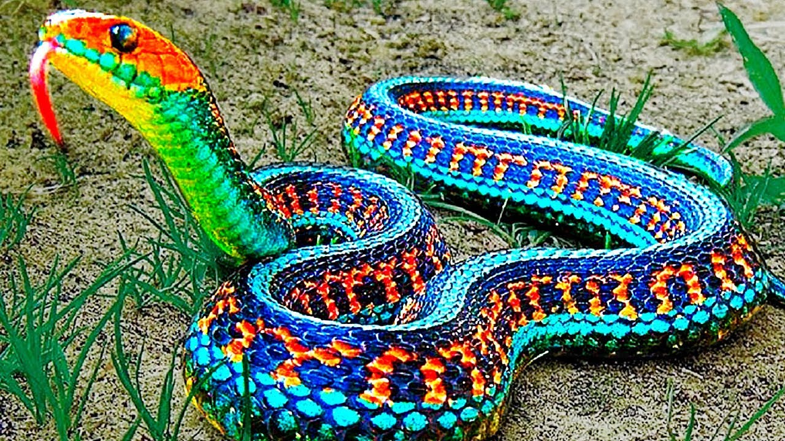
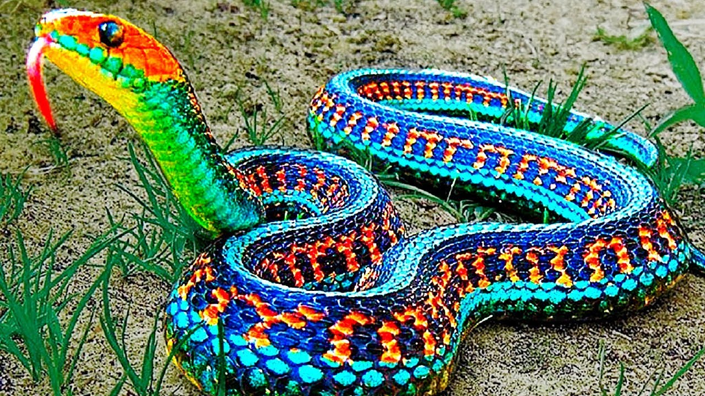

| Where their from? | How many species are known? | What color can they be? |
|---|---|---|
| They can be from anywhere though most live in rainforests and in the deserts | Around 3,000 species of snakes | bright red, orange, yellow, and white |